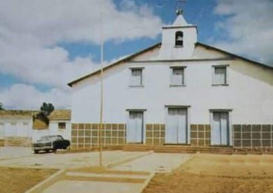
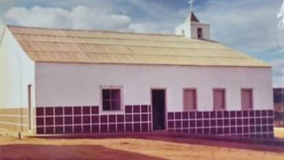

Características da família Caires Pereira
Você sabia que a Igreja Matriz São João Batista foi construída por um ancestral da família?
 Segundo relatos do patriarca: ele estava sozinho vivendo na Bahia e já conhecia a matriarca, Tia Selvina teria falado com Vô Tonim que tinha um sobrinho precisando casar. Mas seu compadre Fidelcino já namorava Tia Vitinha e incentivava ele a ir lá na casa delas. Nesse interim marcaram uma viagem para a Lapa. Na viagem acostumou/agradou com todos da família, inclusive, com os irmãos: Tio Vital, Tio Juvêncio, etc... E que encantou com a forma em que mãe cuidava de todo mundo, concordando com casamento. Para o casamento ficou marcado para ocorrer na cidade de Cordeiros-BA, o que dificultaria muito, inclusive para Vó Manela que teria de ir a cavalo. Faltando dois dias para o casamento chegaram aqui na cidade uma missão com vários padres. Porém teria o tempo dos trâmites do cartório civil, o que foi contornado após várias tentativas.
No dia do casamento ele passou na casa de sua mãe, a falecida Vó Dôca, e ela tinha te preparado sua roupa e um buquê; de lá foi para o São Pedro, onde mãe se encontrava sozinha, pois o resto da família já estavam aqui na cidade, conversou com ela sobre casar aqui mesmo aqui em São João até mesmo para facilitar, e ela concordou. Montados a cavalos se encaminharam para São João onde se casaram.
Foram então morar com nossos avós e trabalhar para eles, após benfeitorias feitas, nosso avô trocou as benfeitorias numa casa em São João (casa grande ao lado da escola Mendes e correio na época). Sobrando poucos recursos (apesar de muito pobre), pai então conseguiu levantar recursos (vendendo tudo o que tinha) e comprar o pedaço de terra na Fazenda São Pedro. Nesse período Vô Tonim resolveu ir morar na Barra da Alegria, mas Vó Manela disse que só iria se Izabel (nossa mãe) fosse. Pai então conseguiu vender metade da terra do São Pedro e foi morar com nossos avós na Barra da Alegria, porém estava descontente, pois trabalhava para nosso avô e não recebia o suficiente para dar um tratamento melhor para os filhos. Resolveu então voltar para São João, alegando que Lourdes já estava com 6 anos (na idade escolar) e que em São João a escola era melhor que na Barra da Alegria. Voltaram para São João juntamente com os nossos avós. Mas, a vida continuara a mesma, com pai trabalhando para Vô Tonim. Vendeu então a terra (Terra de Tio Bernardo) que tinha adquirido com parte do dinheiro da terra do São Pedro e construiu com muita dificuldade a casa que hoje é de Wilson perto da loja de Tião de Totó. Como estava muito difícil, sem receber muito recurso trabalhando para nosso avô; pai então arrumou recurso vendendo uma pareia de boi que lhe sobrara e comprou uma oficina.
Em certa oportunidade Pai presenciou Vô Tonim oferecer a casa grande ao lado da escola para outra pessoa (Val), como a pessoa não se interessou, pai então adquiriu recursos com o que podia e foi a Montes Claros (onde nossos avós moravam na época) fazer uma proposta na casa. A proposta foi aceita, adquirindo a casa e seguindo a vida com muita dificuldade, mas, com muita honestidade e exemplo de vida.
Áudio de pai contando parte da história!